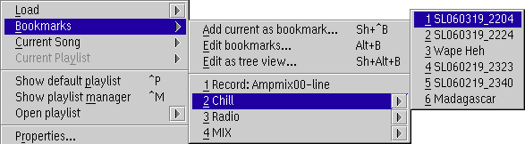

PM123 uses a special playlist called bookmark.lst in the PM123 folder to store the user's bookmarks. The bookmarks are automatically saved on exit. This bookmarks are shown in the context menu of the player. Changes to this playlist are immediately reflected to the context menu.

If you add a nested playlists to the bookmark list this causes a sub menu in the bookmarks. This can be useful to structure your bookmarks.
Note that every nested playlist in the bookmarks folder have to be a
separate file. You must give them a unique filename.
You may place this files in the PM123 folder or somewhere else. But you
should ensure that the files are reachable when PM123 starts up.
Otherwise the associated sub menus will be disabled.
If you bookmark a recursive link to a file system folder PM123 will browse online through your file system. However, this may eat a reasonable amount of resources. So be careful.
If you want to bookmark an entire playlist simply add it somewhere to your bookmarks. When you want to load this playlist do not open the conditional cascade sub menu but click the list directly instead. This will cause PM123 to load a playlist instead of a single song.
To add a new sub menu choose Add from the context menu and add a new playlist file.
Once you added the playlist, you may add items to it e.g. by Drag and Drop.
Don't forget to save the playlist, because only the top level
bookmark list is saved automatically unless autosave is activated
in the settings.